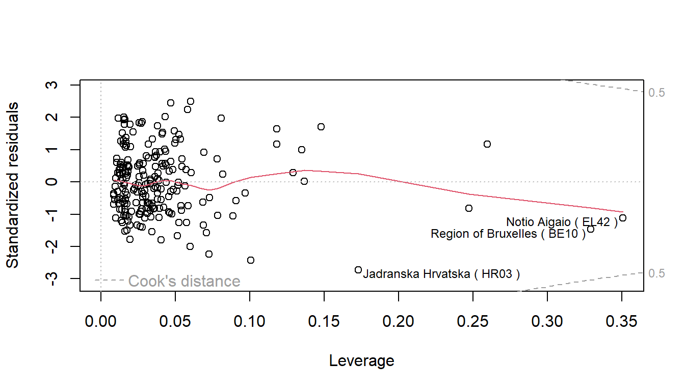
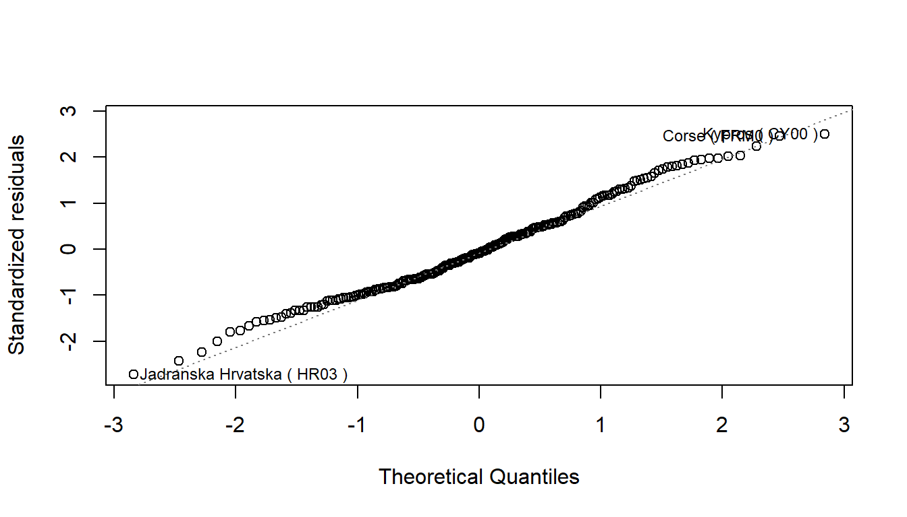
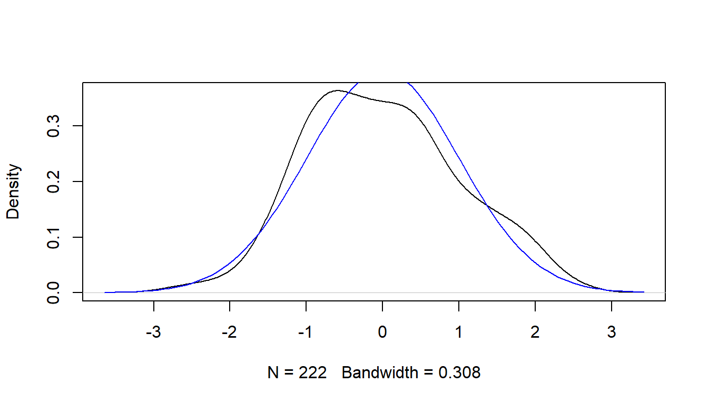
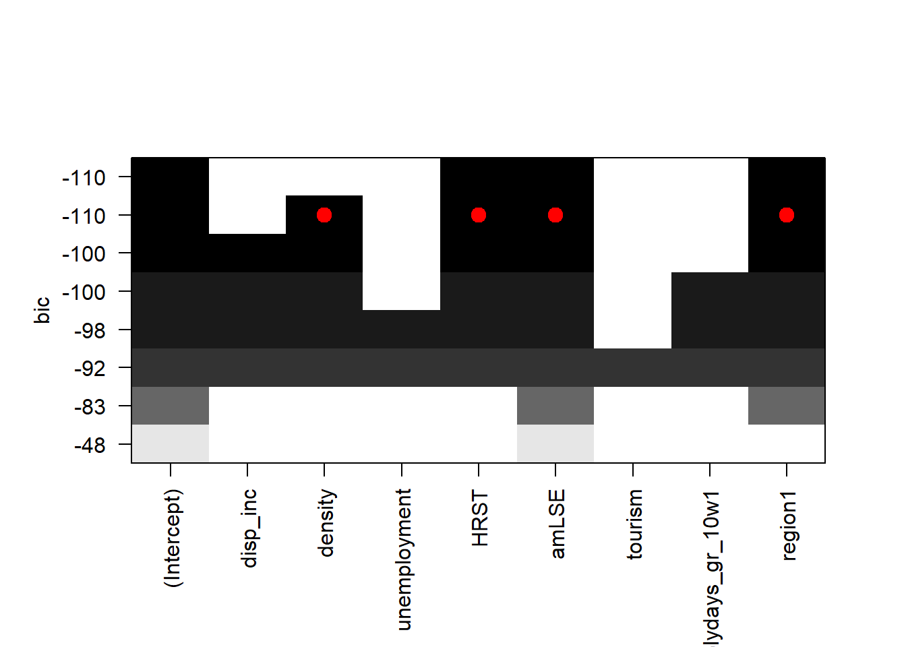
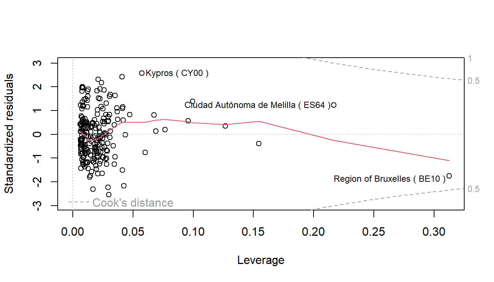
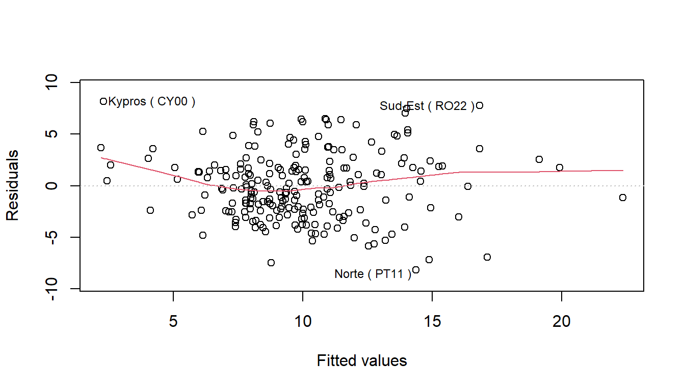
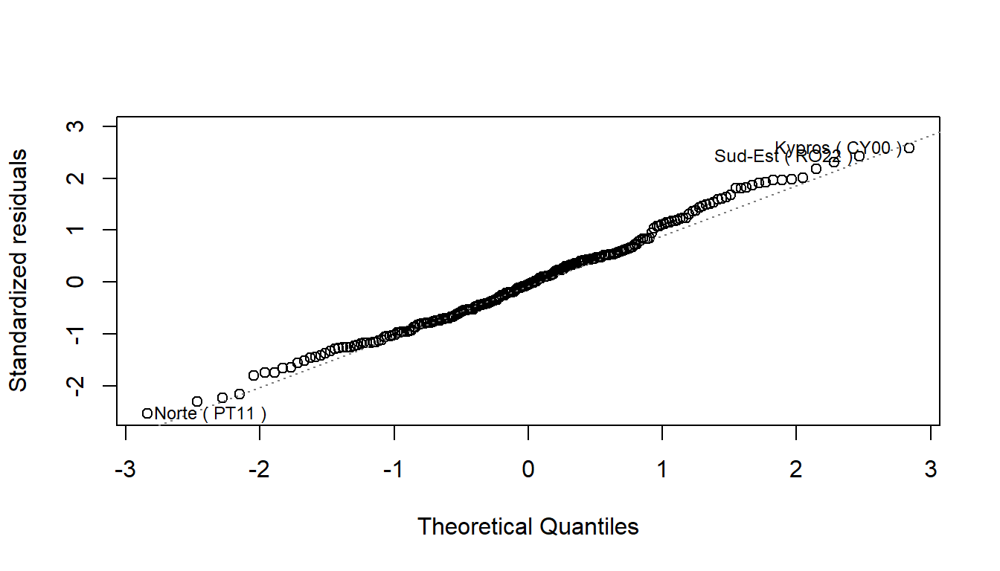
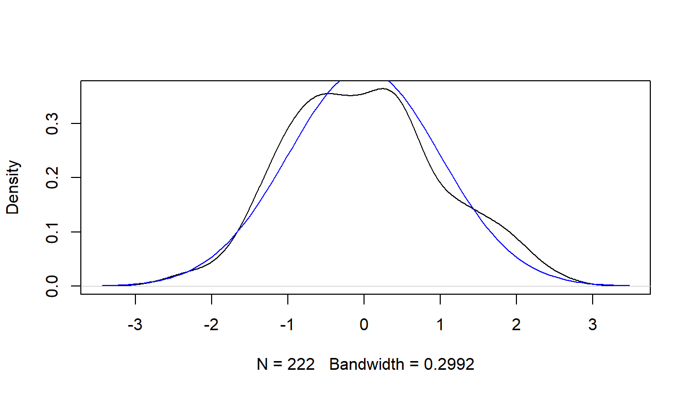

Causes of Early School Leaving in the EU: A Quantitative Analysis
Abstract
This study examines the causes of early school leaving (ESL) in the European Union (EU) through a quantitative analysis, employing a multiple regression model to identify key contributing factors. Drawing on comprehensive data and previous research, this analysis investigates the impact of socioeconomic status, educational system characteristics, and individual student attributes on ESL rates across EU member states. The findings reveal that socioeconomic factors, particularly education levels of adults and sectors where people work, significantly influence ESL rates.
1 Introduction
Education is the main factor in the so-called Social Elevator, which is the integration between the socio-economic classes that form the productive fabric of the country. It is therefore the most important element that enables the individual to escape poverty (Byrne and Smyth 2010). In fact, the vast majority of studies have shown that it is especially tertiary education that levels the strata of society. But still, to get to university there is a need to have completed the entire secondary education. For this reason, in the welfare states or at least in nations with the rule of law, which aim at reducing inequality, schooling is compulsory for young people.
Despite the crucial role of education, many students in the European Union still leave school early, failing to complete their secondary education. This phenomenon, known as early school leaving, presents a significant challenge to the goal of reducing social inequality and improving socio-economic mobility within the EU. Understanding the causes of early school leaving in this context is essential for developing effective policies and interventions to keep students engaged and enrolled through the completion of their education.
Research has identified several factors that contribute to early school leaving. These factors include academic struggles, negative school experiences, socio-economic background, and school policies such as ability grouping. Students with lower reading levels at the start of secondary education are particularly vulnerable to dropping out. Early educational failures and lack of support for academic difficulties play a significant role in this issue, as do the broader school environment and practices that may alienate or inadequately address the needs of struggling students.
While there are many non-quantifiable factors that influence early school leaving, this study focuses on the causes for which we have data, providing a quantitative analysis of the issue. By examining measurable factors, we aim to offer a clear and evidence-based understanding of the patterns and determinants of early school leaving in the European Union.
Given the complexity and multifaceted nature of early school leaving, it is critical to explore the various underlying causes comprehensively. The next section will review the scientific literature to provide a detailed analysis of these causes, drawing on recent studies and empirical evidence within the European Union context.
2 Causes of Early School Leaving in Scientific Literature
To best understand the causes of ESL, a multidisciplinary approach, both theoretical and empirical (wherever possible), is needed. Therefore, we will list all the causes of ESL, which we will then try to translate into explanatory variables in Section 3 to study the phenomenon quantitatively.
2.1 Psychological and Individual Factors
Students with low cognitive ability show a high susceptibility to ESL: lack of achievement and demonstrated poor performance demotivate the individual to continue with schooling (Bosoanca 2021). In fact, studies highlight that students with lower reading levels at the onset of second-level education are more prone to dropping out in subsequent years. Early school leaving is often rooted in initial educational failures and academic struggles, emphasizing the necessity for comprehensive educational policies across all sectors (Byrne and Smyth 2010).
Yet, early school leaving is influenced not only by academic underachievement but also by the school’s response to these challenges. Notably, some students felt neglected in academically engaged schools, while others faced concentrated academic difficulties and misbehavior in specific classes, frequently due to ability grouping practices (Byrne and Smyth 2010).
2.3 Economic Factors
The risk of students dropping out of school is highest among those who have parents with low levels of education but only if those parents have low incomes (Bitsakos 2021). This happens because young people are induced to contribute to family income; this dynamic especially affects working-class boys (Byrne and Smyth 2010). This pattern ends up in a vicious cycle that prevents social climbing: most low-educated individuals are more likely to get a low-income job and so on, especially in a shrinking market.
Turning to the macro level, in fact, low-educated people not only fail to climb out of poverty, but also fail to contribute to the growth of the economic system in which they are immersed.
2.4 Demographic Factors
Higher dropout rates are observed among minority groups, specifically immigrant students. For newcomer students, dropout rates are not linked to mobility or emigration but may be related to factors like age at immigration, language barriers, school experiences, or broader social issues (Byrne and Smyth 2010).
Additionally, according to some research, pupils are much less likely to drop out of school if there is more homogeneity within the structure, both economic and ethnic (Bosoanca 2021). Moreover, according to De Witte and Van Klaveren (2012), there are more cases of school dropouts in rural areas than in areas with another degree of urbanization, such as medium and large cities.
3 The Quantitative Analysis
The quantitative analysis that you will want to conduct below will be a multiple linear regression model: the goal will be to find significant causes of ESL among demographic and socioeconomic characteristics of the population.
3.1 Data Collection and Characteristicsristics
Each unit analyzed is a NUTS 2 region of the European Union; they may be “Provincies/Provinces” for Belgium, “Comunididades y ciudades autónomas” for Spain, “Régions” for France, “Länder” for Austria, and “Regioni” for Italy. NUTS 2 regions have populations ranging from 800,000 to 3 million, with a few exceptions. If no appropriately sized administrative units exist in a member state, this level is formed by aggregating an appropriate number of smaller and contiguous administrative units. These units thus aggregated are called “nonadministrative units”. The current NUTS 2021 classification came into effect on January 1, 2021 and indicates 242 at NUTS level 2 (Gouardères 2024).
The year considered for our analysis is 2023 but since there were missing data for certain years and regions, we went back one year at a time until 2018 for the imputation of those data. Regions for which data could not be imputed were excluded from the dataset.
| Region | Country |
|---|---|
| Burgenland | AT |
| Kärnten | AT |
| Voreio Aigaio | EL |
| Dytiki Makedonia | EL |
| Ipeiros | EL |
| Thessalia | EL |
| Ionia Nisia | EL |
| Åland | FI |
| Limousin | FR |
| Mayotte | FR |
| Kontinentalna Hrvatska | HR |
| Valle d’Aosta/Vallée d’Aoste | IT |
| Malta | MT |
| Opolskie | PL |
| Świętokrzyskie | PL |
| Podlaskie | PL |
| Região Autónoma da Madeira | PT |
| Bratislavský kraj | SK |
All data were collected from Eurostat Database.
3.2 Response variable
“Early leavers are defined as individuals aged 18-24 who have completed at most a lower secondary education and were not in further education or training during the four weeks preceding the labour force survey (LFS)” (Eurostat 2024b).
The measure is expressed as a percentage of the total population aged between 18 and 24.

3.3 Explanatory variables
3.3.1 Mean Disposable Income
“The disposable income of private households is the balance of primary income (operating surplus/mixed income plus compensation of employees plus property income received minus property income paid) and the redistribution of income in cash. These transactions comprise social contributions paid, social benefits in cash received, current taxes on income and wealth paid, as well as other current transfers. Disposable income does not include social transfers in kind coming from public administrations or non-profit institutions serving households” (Eurostat 2024a).
We took the disposable income and divided for the population, obtaining the mean. The measure is expressed in thousands of euros.


3.3.2 Population Density
Since, according to some studies, most of the ESL are concentrated in rural areas and thus outside the capital cities, we will take into account the population density of the regions concerned.
“The ratio between the annual average population and the land area of the region. The land area concept (excluding inland waters) should be used wherever available; if not available then the total area, including inland waters (area of lakes and rivers) is used” (Eurostat 2024g).
The measure is expressed in hundreds of inhabitants per square kilometer.
3.3.3 Unemployment Rate
” […] unemployment rate represents unemployed persons as a percentage of the economically active population (i.e. labour force or sum of employed and unemployed). The indicator is based on the EU Labour Force Survey. Unemployed persons comprise persons aged 15-74 who were (all three conditions must be fulfilled simultaneously): 1. without work during the reference week; 2. currently available for work; 3. actively seeking work or who had found a job to start within a period of at most three months. The employed persons are those aged 15-64, who during the reference week did any work for pay, profit or family gain for at least one hour, or were not at work but had a job or business from which they were temporarily absent” (Eurostat 2024i).


3.3.4 Human Resources in Science and Technology
“Human resources in science and technology (HRST) as a share of the active population in the age group 15-74 at the regional NUTS 2 level. The data shows the active population in the age group 15-74 that is classified as HRST (i.e. having successfully completed an education at the third level or being employed in science and technology) as a percentage of total active population aged 15-74. HRST are measured mainly using the concepts and definitions laid down in the Canberra Manual, OECD, Paris, 1995” (Eurostat 2024d).


3.3.5 Over-25s with at most Lower Secondary Education
Since the educational attainment of parents and people in the context are very important for their influence on the pupil, we include the variable of the percentage of over-25s with at most lower secondary education.


3.3.6 Tourism
We created an indicator dividing the nights spent in a tourist accommodation by the population.
“A night spent is each night a guest/tourist (resident or non-resident) actually spends (sleeps or stays) or is registered (his/her physical presence there being unnecessary) in a tourist accommodation establishment” (Eurostat 2024e).
3.3.7 Weeks of holiday from School
The first dummy we used in the model concerns the weeks the student is away from school. The cut point we took is 10 weeks away from school, through the entire school-year.
3.3.8 Southern Europe
The other dummy variable used in the model is the region’s membership in the Southern European area. To examine potential differences in the relationship between the rate of early school leavers and European regions, a Chow test was conducted. The Chow test is utilized to investigate whether there exists a significant structural break between the regression model of Southern Europe region and a model with the rest of the regions. This is because historically this region has profoundly different characteristics than other European regions. We used to identify them the division made by the United_Nations_Statistics_Division (n.d.).

| F value | d.f.1 | d.f.2 | P value |
|---|---|---|---|
| 11.926 | 7 | 208 | 0 |
The p-value of Chow’s test was found to be highly significant, which is why it was decided to adopt Southern Europe as a dummy variable.
| esl | Min. : 1.300 | 1st Qu.: 6.900 | Median : 8.700 | Mean : 9.922 | 3rd Qu.:12.575 | Max. :24.600 |
| disp_inc | Min. : 8.164 | 1st Qu.:14.590 | Median :17.921 | Mean :17.651 | 3rd Qu.:20.825 | Max. :28.289 |
| density | Min. : 0.0350 | 1st Qu.: 0.7248 | Median : 1.2350 | Mean : 3.6344 | 3rd Qu.: 2.6850 | Max. :76.6000 |
| unemployment | Min. : 1.700 | 1st Qu.: 3.200 | Median : 5.100 | Mean : 6.093 | 3rd Qu.: 7.475 | Max. :30.000 |
| HRST | Min. :21.60 | 1st Qu.:39.15 | Median :47.20 | Mean :46.40 | 3rd Qu.:52.58 | Max. :72.90 |
| amLSE | Min. : 1.80 | 1st Qu.:11.93 | Median :17.55 | Mean :19.60 | 3rd Qu.:24.85 | Max. :58.80 |
| tourism | Min. : 0.6838 | 1st Qu.: 2.7955 | Median : 4.3757 | Mean : 7.6196 | 3rd Qu.: 7.6543 | Max. :110.4065 |

4 Results
4.1 Multiple Regression Model
The primary objective was to analyze and predict the percentage of early school leavers across various EU regions. To achieve this, a multiple regression model was employed, with the response variable being the percentage of early school leavers. The explanatory variables were selected based on theoretical foundations and prior research indicating their potential impact on early school leaving rates.
First of all, the model parameters were estimated using Ordinary Least Squares (OLS) method. The statistical significance of each explanatory variable was assessed using t-tests, and the overall model fit was evaluated using R-squared and adjusted R-squared values.
Moreover, Variance Inflation Factors (VIFs) were calculated to check for multicollinearity among the explanatory variables. Variables with high VIFs were removed to reduce multicollinearity. Various models were compared using Adjusted RSquared criteria to select the most parsimonious model that provided the best fit to the data. The final multiple regression model, that will be shown in Section 4, included the most significant explanatory variables that collectively explained a substantial proportion of the variance in the percentage of early school leavers. The model coefficients were interpreted to understand the direction and magnitude of the relationships
Finally, residual plots, normality tests and homoschedasticity test were examined to ensure that the residuals were randomly distributed and did not exhibit any patterns.
4.1.1 Complete Regression
Initially, Early School Leaving was analyzed in relation to all available explanatory variables. It was first decided to center the quantitative explanatory variables (not the dummies, of course) such that they all had for mean 0, to ensure greater interpretability in the results. The multiple regression model was specified as: \[ \text{Early School Leavers} = \beta_0 + \beta_1 \text{Mean Disposable Income} + \beta_2 \text{Population Density} + \] \[ + \beta_3 \text{Unemployment Rate} + \beta_4 \text{Human Resources in Science and Technology} + \] \[ + \beta_5 \text{Over 25 with at most Lower Secondary Education}+ \beta_6 \text {Tourism} + \] \[ + \beta_7 \text {More than 10 weeks of Holyday from School} + \beta_8 \text {Southern Europe} + \epsilon \]
We see that the significant covariates at the one-per-thousand level are the percentage of workers working in science and technology, which have a negative effect on school dropout, and the percentage of adults with at most lower secondary education, which has a positive effect instead.
Estimate | Standard Error | t value | Pr(>|t|) | ||
|---|---|---|---|---|---|
(Intercept) | 11.035 | 0.325 | 33.946 | 0.0000 | *** |
disp_inc | 0.180 | 0.087 | 2.063 | 0.0403 | * |
density | 0.047 | 0.028 | 1.701 | 0.0903 | . |
unemployment | 0.105 | 0.086 | 1.230 | 0.2201 |
|
HRST | -0.178 | 0.033 | -5.364 | 0.0000 | *** |
amLSE | 0.261 | 0.037 | 7.151 | 0.0000 | *** |
tourism | -0.001 | 0.019 | -0.054 | 0.9571 |
|
holydays_gr_10w1 | 1.514 | 0.841 | 1.799 | 0.0734 | . |
region1 | -6.876 | 1.039 | -6.620 | 0.0000 | *** |
Signif. codes: 0 <= '***' < 0.001 < '**' < 0.01 < '*' < 0.05 | |||||
Residual standard error: 3.262 on 213 degrees of freedom | |||||
Multiple R-squared: 0.4695, Adjusted R-squared: 0.4496 | |||||
F-statistic: 23.56 on 213 and 8 DF, p-value: 0.0000 | |||||
There are no outliers in the model and few observation with a high leverage.


The residual diagnostics indicated that the residuals follow a normal distribution, as confirmed by the Normality Tests.


| Shapiro-Wilk | Jarque Bera | Kolmogorov-Smirnov |
|---|---|---|
| 0.0694527 | 0.2296591 | 0.4884887 |
However, issues of heteroscedasticity, multicollinearity, and autocorrelation are present.
-1.png)
| BP.BP | df.df | p-value.BP |
|---|---|---|
| 20.36329 | 8 | 0.0090456 |
| disp_inc | density | unemployment | HRST | amLSE | tourism | |
|---|---|---|---|---|---|---|
| disp_inc | 1.0000000 | 0.1504446 | -0.3586956 | 0.6164912 | -0.1415571 | 0.0574963 |
| density | 0.1504446 | 1.0000000 | 0.2589299 | 0.2599644 | 0.0763902 | -0.0662088 |
| unemployment | -0.3586956 | 0.2589299 | 1.0000000 | -0.2550457 | 0.6472818 | -0.0050442 |
| HRST | 0.6164912 | 0.2599644 | -0.2550457 | 1.0000000 | -0.4263103 | -0.1215436 |
| amLSE | -0.1415571 | 0.0763902 | 0.6472818 | -0.4263103 | 1.0000000 | 0.1484406 |
| tourism | 0.0574963 | -0.0662088 | -0.0050442 | -0.1215436 | 0.1484406 | 1.0000000 |
| disp_inc | density | unemployment | HRST | amLSE | tourism | holydays_gr_10w | region |
|---|---|---|---|---|---|---|---|
| 2.721469 | 1.273166 | 2.607498 | 2.387714 | 3.489364 | 1.102973 | 3.441148 | 4.144876 |
| Autocorrelation | D-W Statistic | p-value |
|---|---|---|
| 0.301 | 1.394 | 0 |
4.1.2 Regression with Selected Variables
To address these issues, an approach based on the adjusted R-squared criterion was adopted to select the explanatory variables that eventually were only 4: Population Density, Human Resources in Science and Technology, Adults with at most Lower Secondary Education and the Southern Region as dummy variable. This method was chosen to identify a subset of variables that would improve the model’s fit while mitigating the detected problems.


In the revised model, with fewer explanatory variables (all found significant), the issues of heteroscedasticity and multicollinearity are resolved. Nonetheless, the problem of autocorrelation persists.
Estimate | Standard Error | t value | Pr(>|t|) | ||
|---|---|---|---|---|---|
(Intercept) | 11.292 | 0.288 | 39.163 | 0.0000 | *** |
HRST | -0.154 | 0.025 | -6.133 | 0.0000 | *** |
amLSE | 0.286 | 0.031 | 9.216 | 0.0000 | *** |
density | 0.060 | 0.026 | 2.294 | 0.0228 | * |
region1 | -5.632 | 0.768 | -7.331 | 0.0000 | *** |
Signif. codes: 0 <= '***' < 0.001 < '**' < 0.01 < '*' < 0.05 | |||||
Residual standard error: 3.271 on 217 degrees of freedom | |||||
Multiple R-squared: 0.4563, Adjusted R-squared: 0.4463 | |||||
F-statistic: 45.53 on 217 and 4 DF, p-value: 0.0000 | |||||


The residual diagnostics indicated that the residuals followed a normal distribution.


| Shapiro-Wilk | Jarque Bera | Kolmogorov-Smirnov |
|---|---|---|
| 0.1565565 | 0.2670419 | 0.8021918 |
_sel-1.png)
| BP.BP | df.df | p-value.BP |
|---|---|---|
| 8.948471 | 4 | 0.0624004 |
| density | HRST | amLSE | |
|---|---|---|---|
| density | 1.0000000 | 0.2599644 | 0.0763902 |
| HRST | 0.2599644 | 1.0000000 | -0.4263103 |
| amLSE | 0.0763902 | -0.4263103 | 1.0000000 |
| HRST | amLSE | density | region |
|---|---|---|---|
| 1.367354 | 2.501637 | 1.129234 | 2.254174 |
| Autocorrelation | D-W Statistic | p-value |
|---|---|---|
| 0.314 | 1.371 | 0 |
5 Conclusion
5.0.1 References
Bitsakos, Nikolaos. 2021. “CAUSES OF EARLY SCHOOL LEAVING AND PREVENTION MEASURES: SCHOOL DIRECTORS’INSIGHTS.” European Journal of Education Studies 8 (5).
Bosoanca, Bianca. 2021. “The Causes of School Drop-Out Among Scholars in Rural Areas.” Review of Socio-Economic Perspectives 6 (202182): 59–65.
Byrne, Delma, and Emer Smyth. 2010. “No Way Back? The Dynamics of Early School Leaving.”
De Witte, Kristof, and Chris Van Klaveren. 2012. “Comparing Students by a Matching Analysis–on Early School Leaving in Dutch Cities.” Applied Economics 44 (28): 3679–90.
Eurostat. 2024a. “Disposable Income of Private Households by NUTS 2 Regions.” 2024. https://doi.org/10.2908/TGS00026.
———. 2024b. “Early Leavers from Education and Training.” 2024. https://ec.europa.eu/eurostat/statistics-explained/index.php?title=Early_leavers_from_education_and_training.
———. 2024c. “Early Leavers from Education and Training by Sex and NUTS 2 Regions.” 2024. https://doi.org/10.2908/EDAT_LFSE_16.
———. 2024d. “Human Resources in Science and Technology (HRST) by NUTS 2 Regions.” 2024. https://doi.org/10.2908/tgs00038.
———. 2024e. “Nights Spent at Tourist Accommodation Establishments by NUTS 2 Regions.” 2024. https://doi.org/10.2908/TGS00111.
———. 2024f. “Population by Educational Attainment Level, Sex and NUTS 2 Regions (.” 2024. https://doi.org/10.2908/edat_lfse_04.
———. 2024g. “Population Density by NUTS 2 Region.” 2024. https://doi.org/10.2908/TGS00024.
———. 2024h. “Population on 1 January by Age, Sex and NUTS 2 Region.” 2024. https://doi.org/10.2908/DEMO_R_D2JAN.
———. 2024i. “Unemployment Rate by NUTS 2 Regions.” 2024. https://doi.org/10.2908/TGS00010.
Gouardères, Frédéric. 2024. “Nomenclatura Comune Delle Unità Territoriali Statistiche (NUTS).” 2024. https://www.europarl.europa.eu/factsheets/it/sheet/99/nomenclatura-comune-delle-unita-territoriali-statistiche-nuts-.
Mı́nguez, Almudena Moreno. 2013. “The Early School Leaving in Europe: Approaching the Explanatory Factors.” New Horizons in Education 61 (2).
United_Nations_Statistics_Division. n.d. “Standard Country or Area Codes for Statistical Use (M49).” https://unstats.un.org/unsd/methodology/m49/.